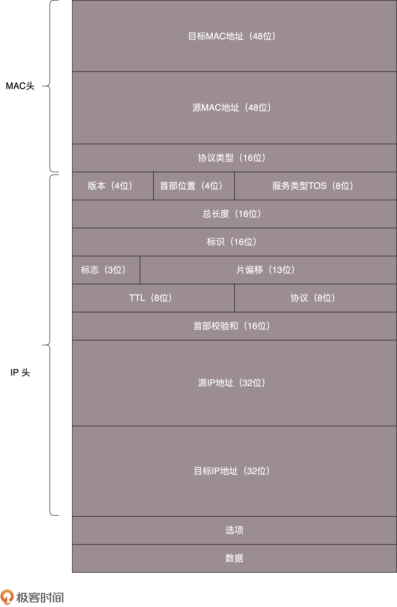
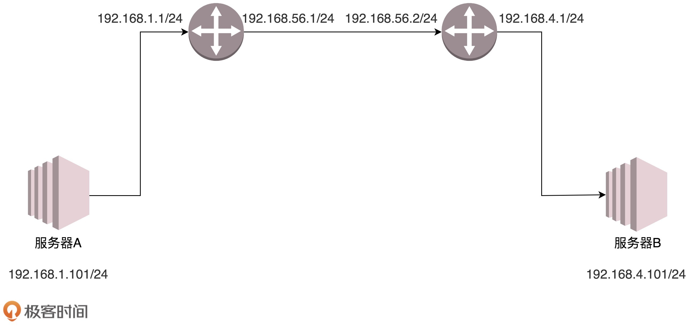
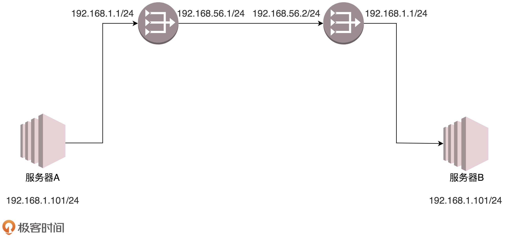

- 00 开篇词 想成为技术牛人？先搞定网络协议！.md
- 01 为什么要学习网络协议？.md
- 02 网络分层的真实含义是什么？.md
- 03 ifconfig：最熟悉又陌生的命令行.md
- 04 DHCP与PXE：IP是怎么来的，又是怎么没的？.md
- 05 从物理层到MAC层：如何在宿舍里自己组网玩联机游戏？.md
- 06 交换机与VLAN：办公室太复杂，我要回学校.md
- 07 ICMP与ping：投石问路的侦察兵.md
- 08 世界这么大，我想出网关：欧洲十国游与玄奘西行.md
- 09 路由协议：西出网关无故人，敢问路在何方.md
- 10 UDP协议：因性善而简单，难免碰到“城会玩”.md
- 11 TCP协议（上）：因性恶而复杂，先恶后善反轻松.md
- 12 TCP协议（下）：西行必定多妖孽，恒心智慧消磨难.md
- 13 套接字Socket：Talk is cheap, show me the code.md
- 14 HTTP协议：看个新闻原来这么麻烦.md
- 15 HTTPS协议：点外卖的过程原来这么复杂.md
- 16 流媒体协议：如何在直播里看到美女帅哥？.md
- 17 P2P协议：我下小电影，99%急死你.md
- 18 DNS协议：网络世界的地址簿.md
- 19 HttpDNS：网络世界的地址簿也会指错路.md
- 20 CDN：你去小卖部取过快递么？.md
- 21 数据中心：我是开发商，自己拿地盖别墅.md
- 22 VPN：朝中有人好做官.md
- 23 移动网络：去巴塞罗那，手机也上不了脸书.md
- 24 云中网络：自己拿地成本高，购买公寓更灵活.md
- 25 软件定义网络：共享基础设施的小区物业管理办法.md
- 26 云中的网络安全：虽然不是土豪，也需要基本安全和保障.md
- 27 云中的网络QoS：邻居疯狂下电影，我该怎么办？.md
- 28 云中网络的隔离GRE、VXLAN：虽然住一个小区，也要保护隐私.md
- 29 容器网络：来去自由的日子，不买公寓去合租.md
- 30 容器网络之Flannel：每人一亩三分地.md
- 31 容器网络之Calico：为高效说出善意的谎言.md
- 32 RPC协议综述：远在天边，近在眼前.md
- 33 基于XML的SOAP协议：不要说NBA，请说美国职业篮球联赛.md
- 34 基于JSON的RESTful接口协议：我不关心过程，请给我结果.md
- 35 二进制类RPC协议：还是叫NBA吧，总说全称多费劲.md
- 36 跨语言类RPC协议：交流之前，双方先来个专业术语表.md
- 37 知识串：用双十一的故事串起碎片的网络协议（上）.md
- 38 知识串：用双十一的故事串起碎片的网络协议（中）.md
- 39 知识串：用双十一的故事串起碎片的网络协议（下）.md
- 40 搭建一个网络实验环境：授人以鱼不如授人以渔.md
- 加餐1 创作故事：我是如何创作“趣谈网络协议”专栏的？.md
- 协议专栏特别福利 答疑解惑1期.md
- 协议专栏特别福利 答疑解惑2期.md
- 协议专栏特别福利 答疑解惑3期.md
- 协议专栏特别福利 答疑解惑4期.md
- 协议专栏特别福利 答疑解惑5期.md
- 结束语 放弃完美主义，执行力就是限时限量认真完成.md
08 世界这么大，我想出网关：欧洲十国游与玄奘西行
前几节，我主要跟你讲了宿舍里和办公室里用到的网络协议。你已经有了一些基础，是时候去外网逛逛了！
怎么在宿舍上网？
还记得咱们在宿舍的时候买了台交换机，几台机器组了一个局域网打游戏吗？可惜啊，只能打局域网的游戏，不能上网啊！盼啊盼啊，终于盼到大二，允许宿舍开通网络了。学校给每个宿舍的网口分配了一个IP地址。这个IP是校园网的IP，完全由网管部门控制。宿舍网的IP地址多为192.168.1.x。校园网的IP地址，假设是10.10.x.x。
这个时候，你要在宿舍上网，有两个办法：
第一个办法，让你们宿舍长再买一个网卡。这个时候，你们宿舍长的电脑里就有两张网卡。一张网卡的线插到你们宿舍的交换机上，另一张网卡的线插到校园网的网口。而且，这张新的网卡的IP地址要按照学校网管部门分配的配置，不然上不了网。这种情况下，如果你们宿舍的人要上网，就需要一直开着宿舍长的电脑。
第二个办法，你们共同出钱买个家庭路由器（反正当时我们买不起）。家庭路由器会有内网网口和外网网口。把外网网口的线插到校园网的网口上，将这个外网网口配置成和网管部的一样。内网网口连上你们宿舍的所有的电脑。这种情况下，如果你们宿舍的人要上网，就需要一直开着路由器。
这两种方法其实是一样的。只不过第一种方式，让你的宿舍长的电脑，变成一个有多个口的路由器而已。而你买的家庭路由器，里面也跑着程序，和你宿舍长电脑里的功能一样，只不过是一个嵌入式的系统。
当你的宿舍长能够上网之后，接下来，就是其他人的电脑怎么上网的问题。这就需要配置你们的网卡。当然DHCP是可以默认配置的。在进行网卡配置的时候，除了IP地址，还需要配置一个Gateway的东西，这个就是网关。
你了解MAC头和IP头的细节吗？
一旦配置了IP地址和网关，往往就能够指定目标地址进行访问了。由于在跨网关访问的时候，牵扯到MAC地址和IP地址的变化，这里有必要详细描述一下MAC头和IP头的细节。

在MAC头里面，先是目标MAC地址，然后是源MAC地址，然后有一个协议类型，用来说明里面是IP协议。IP头里面的版本号，目前主流的还是IPv4，服务类型TOS在第三节讲ip addr命令的时候讲过，TTL在第7节讲ICMP协议的时候讲过。另外，还有8位标识协议。这里到了下一层的协议，也就是，是TCP还是UDP。最重要的就是源IP和目标IP。先是源IP地址，然后是目标IP地址。
在任何一台机器上，当要访问另一个IP地址的时候，都会先判断，这个目标IP地址，和当前机器的IP地址，是否在同一个网段。怎么判断同一个网段呢？需要CIDR和子网掩码，这个在第三节的时候也讲过了。
如果是同一个网段，例如，你访问你旁边的兄弟的电脑，那就没网关什么事情，直接将源地址和目标地址放入IP头中，然后通过ARP获得MAC地址，将源MAC和目的MAC放入MAC头中，发出去就可以了。
如果不是同一网段，例如，你要访问你们校园网里面的BBS，该怎么办？这就需要发往默认网关Gateway。Gateway的地址一定是和源IP地址是一个网段的。往往不是第一个，就是第二个。例如192.168.1.0/24这个网段，Gateway往往会是192.168.1.1/24或者192.168.1.2/24。
如何发往默认网关呢？网关不是和源IP地址是一个网段的么？这个过程就和发往同一个网段的其他机器是一样的：将源地址和目标IP地址放入IP头中，通过ARP获得网关的MAC地址，将源MAC和网关的MAC放入MAC头中，发送出去。网关所在的端口，例如192.168.1.1/24将网络包收进来，然后接下来怎么做，就完全看网关的了。
网关往往是一个路由器，是一个三层转发的设备。啥叫三层设备？前面也说过了，就是把MAC头和IP头都取下来，然后根据里面的内容，看看接下来把包往哪里转发的设备。
在你的宿舍里面，网关就是你宿舍长的电脑。一个路由器往往有多个网口，如果是一台服务器做这个事情，则就有多个网卡，其中一个网卡是和源IP同网段的。
很多情况下，人们把网关就叫做路由器。其实不完全准确，而另一种比喻更加恰当：路由器是一台设备，它有五个网口或者网卡，相当于有五只手，分别连着五个局域网。每只手的IP地址都和局域网的IP地址相同的网段，每只手都是它握住的那个局域网的网关。
任何一个想发往其他局域网的包，都会到达其中一只手，被拿进来，拿下MAC头和IP头，看看，根据自己的路由算法，选择另一只手，加上IP头和MAC头，然后扔出去。
静态路由是什么？
这个时候，问题来了，该选择哪一只手？IP头和MAC头加什么内容，哪些变、哪些不变呢？这个问题比较复杂，大致可以分为两类，一个是静态路由，一个是动态路由。动态路由下一节我们详细地讲。这一节我们先说静态路由。
静态路由，其实就是在路由器上，配置一条一条规则。这些规则包括：想访问BBS站（它肯定有个网段），从2号口出去，下一跳是IP2；想访问教学视频站（它也有个自己的网段），从3号口出去，下一跳是IP3，然后保存在路由器里。
每当要选择从哪只手抛出去的时候，就一条一条的匹配规则，找到符合的规则，就按规则中设置的那样，从某个口抛出去，找下一跳IPX。
IP头和MAC头哪些变、哪些不变？
对于IP头和MAC头哪些变、哪些不变的问题，可以分两种类型。我把它们称为“欧洲十国游”型和“玄奘西行”型。
之前我说过，MAC地址是一个局域网内才有效的地址。因而，MAC地址只要过网关，就必定会改变，因为已经换了局域网。两者主要的区别在于IP地址是否改变。不改变IP地址的网关，我们称为转发网关；改变IP地址的网关，我们称为NAT网关。
“欧洲十国游”型
结合这个图，我们先来看“欧洲十国游”型。

服务器A要访问服务器B。首先，服务器A会思考，192.168.4.101和我不是一个网段的，因而需要先发给网关。那网关是谁呢？已经静态配置好了，网关是192.168.1.1。网关的MAC地址是多少呢？发送ARP获取网关的MAC地址，然后发送包。包的内容是这样的：
源MAC：服务器A的MAC
目标MAC：192.168.1.1这个网口的MAC
源IP：192.168.1.101
目标IP：192.168.4.101
包到达192.168.1.1这个网口，发现MAC一致，将包收进来，开始思考往哪里转发。
在路由器A中配置了静态路由之后，要想访问192.168.4.0/24，要从192.168.56.1这个口出去，下一跳为192.168.56.2。
于是，路由器A思考的时候，匹配上了这条路由，要从192.168.56.1这个口发出去，发给192.168.56.2，那192.168.56.2的MAC地址是多少呢？路由器A发送ARP获取192.168.56.2的MAC地址，然后发送包。包的内容是这样的：
源MAC：192.168.56.1的MAC地址
目标MAC：192.168.56.2的MAC地址
源IP：192.168.1.101
目标IP：192.168.4.101
包到达192.168.56.2这个网口，发现MAC一致，将包收进来，开始思考往哪里转发。
在路由器B中配置了静态路由，要想访问192.168.4.0/24，要从192.168.4.1这个口出去，没有下一跳了。因为我右手这个网卡，就是这个网段的，我是最后一跳了。
于是，路由器B思考的时候，匹配上了这条路由，要从192.168.4.1这个口发出去，发给192.168.4.101。那192.168.4.101的MAC地址是多少呢？路由器B发送ARP获取192.168.4.101的MAC地址，然后发送包。包的内容是这样的：
源MAC：192.168.4.1的MAC地址
目标MAC：192.168.4.101的MAC地址
源IP：192.168.1.101
目标IP：192.168.4.101
包到达服务器B，MAC地址匹配，将包收进来。
通过这个过程可以看出，每到一个新的局域网，MAC都是要变的，但是IP地址都不变。在IP头里面，不会保存任何网关的IP地址。所谓的下一跳是，某个IP要将这个IP地址转换为MAC放入MAC头。
之所以将这种模式比喻称为欧洲十国游，是因为在整个过程中，IP头里面的地址都是不变的。IP地址在三个局域网都可见，在三个局域网之间的网段都不会冲突。在三个网段之间传输包，IP头不改变。这就像在欧洲各国之间旅游，一个签证就能搞定。

“玄奘西行”型
我们再来看“玄奘西行”型。
这里遇见的第一个问题是，局域网之间没有商量过，各定各的网段，因而IP段冲突了。最左面大唐的地址是192.168.1.101，最右面印度的地址也是192.168.1.101，如果单从IP地址上看，简直是自己访问自己，其实是大唐的192.168.1.101要访问印度的192.168.1.101。
怎么解决这个问题呢？既然局域网之间没有商量过，你们各管各的，那到国际上，也即中间的局域网里面，就需要使用另外的地址。就像出国，不能用咱们自己的身份证，而要改用护照一样，玄奘西游也要拿着专门取经的通关文牒，而不能用自己国家的身份证。
首先，目标服务器B在国际上要有一个国际的身份，我们给它一个192.168.56.2。在网关B上，我们记下来，国际身份192.168.56.2对应国内身份192.168.1.101。凡是要访问192.168.56.2，都转成192.168.1.101。
于是，源服务器A要访问目标服务器B，要指定的目标地址为192.168.56.2。这是它的国际身份。服务器A想，192.168.56.2和我不是一个网段的，因而需要发给网关，网关是谁？已经静态配置好了，网关是192.168.1.1，网关的MAC地址是多少？发送ARP获取网关的MAC地址，然后发送包。包的内容是这样的：
源MAC：服务器A的MAC
目标MAC：192.168.1.1这个网口的MAC
源IP：192.168.1.101
目标IP：192.168.56.2
包到达192.168.1.1这个网口，发现MAC一致，将包收进来，开始思考往哪里转发。
在路由器A中配置了静态路由：要想访问192.168.56.2/24，要从192.168.56.1这个口出去，没有下一跳了，因为我右手这个网卡，就是这个网段的，我是最后一跳了。
于是，路由器A思考的时候，匹配上了这条路由，要从192.168.56.1这个口发出去，发给192.168.56.2。那192.168.56.2的MAC地址是多少呢？路由器A发送ARP获取192.168.56.2的MAC地址。
当网络包发送到中间的局域网的时候，服务器A也需要有个国际身份，因而在国际上，源IP地址也不能用192.168.1.101，需要改成192.168.56.1。发送包的内容是这样的：
源MAC：192.168.56.1的MAC地址
目标MAC：192.168.56.2的MAC地址
源IP：192.168.56.1
目标IP：192.168.56.2
包到达192.168.56.2这个网口，发现MAC一致，将包收进来，开始思考往哪里转发。
路由器B是一个NAT网关，它上面配置了，要访问国际身份192.168.56.2对应国内身份192.168.1.101，于是改为访问192.168.1.101。
在路由器B中配置了静态路由：要想访问192.168.1.0/24，要从192.168.1.1这个口出去，没有下一跳了，因为我右手这个网卡，就是这个网段的，我是最后一跳了。
于是，路由器B思考的时候，匹配上了这条路由，要从192.168.1.1这个口发出去，发给192.168.1.101。
那192.168.1.101的MAC地址是多少呢？路由器B发送ARP获取192.168.1.101的MAC地址，然后发送包。内容是这样的：
源MAC：192.168.1.1的MAC地址
目标MAC：192.168.1.101的MAC地址
源IP：192.168.56.1
目标IP：192.168.1.101
包到达服务器B，MAC地址匹配，将包收进来。
从服务器B接收的包可以看出，源IP为服务器A的国际身份，因而发送返回包的时候，也发给这个国际身份，由路由器A做NAT，转换为国内身份。
从这个过程可以看出，IP地址也会变。这个过程用英文说就是Network Address Translation，简称NAT。
其实这第二种方式我们经常见，现在大家每家都有家用路由器，家里的网段都是192.168.1.x，所以你肯定访问不了你邻居家的这个私网的IP地址的。所以，当我们家里的包发出去的时候，都被家用路由器NAT成为了运营商的地址了。
很多办公室访问外网的时候，也是被NAT过的，因为不可能办公室里面的IP也是公网可见的，公网地址实在是太贵了，所以一般就是整个办公室共用一个到两个出口IP地址。你可以通过 https://www.whatismyip.com/ 查看自己的出口IP地址。
小结
好了，这一节内容差不多了，我来总结一下：
如果离开本局域网，就需要经过网关，网关是路由器的一个网口；
路由器是一个三层设备，里面有如何寻找下一跳的规则；
经过路由器之后MAC头要变，如果IP不变，相当于不换护照的欧洲旅游，如果IP变，相当于换护照的玄奘西行。
最后，给你留两个思考题吧。
- 当在你家里要访问163网站的时候，你的包需要NAT成为公网IP，返回的包又要NAT成你的私有IP，返回包怎么知道这是你的请求呢？它怎么就这么智能的NAT成了你的IP而非别人的IP呢？
- 对于路由规则，这一节讲述了静态路由，需要手动配置，如果要自动配置，你觉得应该怎么办呢？
欢迎你留言和我讨论。趣谈网络协议，我们下期见！
© 2019 - 2023 Liangliang Lee. Powered by gin and hexo-theme-book.